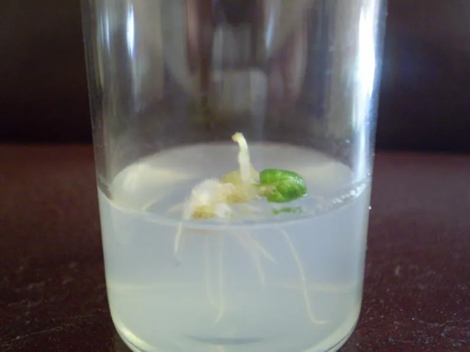
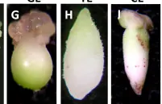
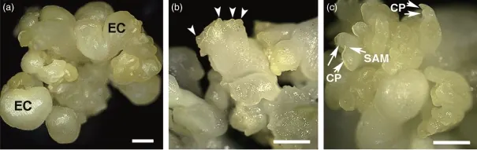
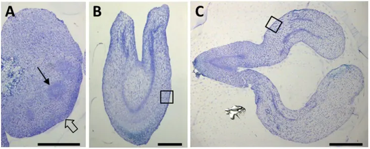
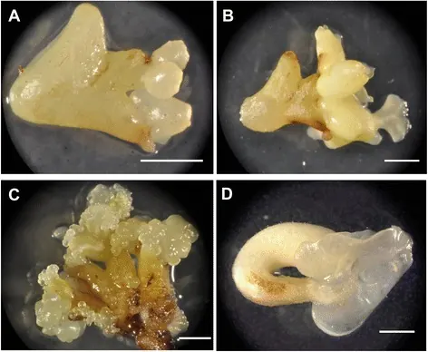
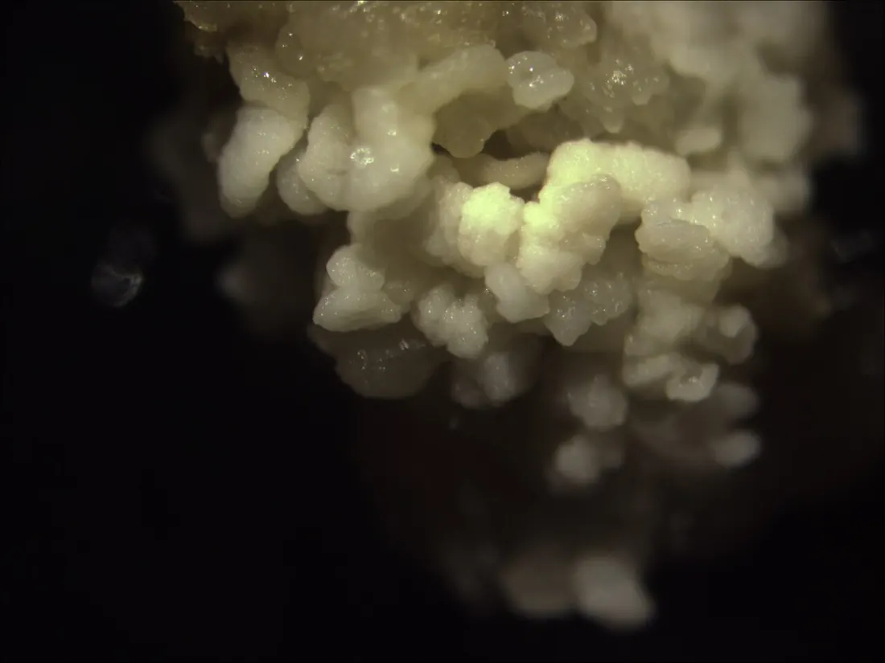

01Мета і план
Мета
Індукувати морфогенез у калюсній тканині: отримати стебловий органогенез у калюсі картоплі й томатів, укорінити мікропагони до рослин-регенерантів і пройти стадії соматичного ембріогенезу в калюсі листків люцерни.
Обладнання й матеріали
- ламінар-бокс, пінцети, ланцети, препарувальні голки, спиртівка;
- колби на 50 мл і пеніцилінові флакони з середовищами МС і Уайта;
- стерильний калюс картоплі, томатів, люцерни;
- культуральна кімната (23–26 °C, 1–3 клк), бінокулярна лупа.
Ви дізнаєтеся
- чим органогенез відрізняється від соматичного ембріогенезу;
- як співвідношення ауксин/цитокінін «перемикає» корені й пагони;
- чому старі калюси втрачають здатність до регенерації;
- як прочитати стадію ембріоїда під лупою.
02Теоретичні відомості
Тотипотентність і три долі калюсної клітини
Цілу рослину можна вивчати як єдину саморегульовану систему, а можна змоделювати окремі процеси розвитку на простіших об'єктах — органах, тканинах, клітинах і протопластах (клітинах без стінки) in vitro (у пробірці, поза організмом). Перевага такого підходу в тому, що експериментатор сам задає умови культивування і не мусить враховувати взаємодію органів у цілісній рослині. Ключ до нього — тотипотентність: здатність окремої соматичної (нестатевої) клітини реалізувати всю програму розвитку й дати початок цілому організму. In vitro її синонімом є «поліпотентність»: перепрограмування клітини може йти різними шляхами.
Після дедиференціації (втрати спеціалізації й повернення до поділу) калюсна клітина має три можливі долі (рис. 1):
Найпростіша форма вторинного диференціювання — окремі спеціалізовані клітини, наприклад епібласти, що запасають вторинні метаболіти. Складніша — гістогенез: утворення в калюсі волокон, трихом (волосків), елементів ксилеми (трахей і трахеїд) і флоеми (ситоподібних трубок і клітин-супутниць). Найскладніші — органогенез і соматичний ембріогенез.
Хоча кожна клітина містить повний набір генів донорної рослини, реально детермінується (отримує «рішення» про шлях розвитку) лише одна з 400–1000 клітин. Вирішальна її компетентність — здатність відповісти на гормональний сигнал. У стеблових експлантатах (фрагментах органа, перенесених на середовище) компетентні лише клітини епідермісу й субепідермальних шарів. Детерміновані клітини-ініціалі мають потовщену стінку, більше ядро, дрібніші вакуолі, накопичують запасні речовини; у них посилюється пентозофосфатний шлях розщеплення гексоз, а між клітинами майбутнього меристематичного осередку відновлюються плазмодесми (цитоплазматичні канали між сусідніми клітинами), майже відсутні в масі калюсу.
Гістогенез
Перетворення калюсних клітин на судинні елементи запускають головно ауксини. Під місцем, де до калюсу прищеплено апекс пагона (джерело ауксину), закладаються провідні елементи; той самий ефект дає нанесення розчину ауксину з сахарозою. Причому висока концентрація сахарози спрямовує диференціювання у бік флоеми, а низька — у бік ксилеми; інші вуглеводи цієї дії не мають. У калюсі сої гістогенез ініціюють також гіберелова кислота й етилен.
Органогенез і соматичний ембріогенез
| Ознака | Органогенез | Соматичний ембріогенез |
|---|---|---|
| Що утворюється | монополярна структура: корінь, пагін, рідше квітка чи листок | біполярний ембріоїд (зародкоподібна структура) з меристемами і кореня, і пагона |
| Початкова маса клітин | меристематичний осередок | глобулярне проембріо |
| Шлях до рослини | спершу орган, потім ціла рослина (пагін треба вкорінити) | одразу зародок → цілий проросток, укорінення не потрібне |
| Гормональний сигнал | баланс ауксинів і цитокінінів | видалення дедиференціюючого ауксину (2,4-Д); далі зародок синтезує власні гормони |
| Генетична точність | можливі химери з кількох клітин | точніше відтворює генотип вихідної рослини |



Гормональний баланс за Скугом — Міллером
Органогенез у калюсі прямо залежить від співвідношення двох груп фітогормонів — ауксинів (стимулюють розтягнення клітин і закладання коренів; Конспект) і цитокінінів (стимулюють поділ клітин і закладання бруньок; Конспект). Класичні досліди Ф. Скуга й К. Міллера (Skoog & Miller, 1957) на серцевині стебла тютюну (Nicotiana tabacum L.) показали: за сталої концентрації ІОК 2 мг/л додавання кінетину 0,02 мг/л дає корені, 0,2 мг/л — неорганізований калюс, 0,5–1 мг/л — пагони. Узагальнення посібника (с. 79):
- ауксин переважає над цитокініном → диференціювання коренів без регенерації цілої рослини (ризогенез);
- цитокініну більше, ауксину менше → стебловий органогенез і пагони (каулогенез);
- пагони, пересаджені на свіже середовище з підвищеним вмістом ауксину, утворюють корені → ціла рослина-регенерант.
Мірою балансу слугує відношення концентрацій, яке зручно брати в логарифмі (крок на 1 = зміна в 10 разів):
[А] — концентрація ауксину, [Ц] — цитокініну, мг/л. Різні речовини мають різну активність, тому в моделі їх зведено до еквівалентів: [А] = kА·cА, [Ц] = kЦ·cЦ (ІОК k = 1, НОК 5, 2,4-Д 10; кінетин 1, 6-БАП 3 — наближення моделі) плюс невеликий ендогенний (власний) рівень гормонів калюсу.
Посібник описує закономірність якісно, тож у моделі її задано логістичними функціями — плавними «перемикачами» між двома станами:
θп = 0,75 (А/Ц ≈ 5,6), θк = 1,45 (А/Ц ≈ 28), w = 0,2 — калібрування за даними Скуга й Міллера; між порогами переважає неорганізований калюс. Кількість пагонів на експлантат у моделі — до 30 («до кількох десятків», с. 82), її множать на достатність цитокініну, освітлення й номер пасажу.
Скорочення. МС — середовище Мурасіге — Скуга; ІОК — індоліл-3-оцтова кислота; НОК — α-нафтилоцтова кислота; ІМК — індоліл-3-масляна кислота; 2,4-Д — 2,4-дихлорфеноксиоцтова кислота (синтетичні й природні ауксини); 6-БАП — 6-бензиламінопурин; кінетин — 6-фурфуриламінопурин (цитокініни); ГК — гіберелова кислота; АБК — абсцизова кислота.
Інші чинники морфогенезу
Органогенез залежить від належності донора до дводольних чи однодольних, генотипу й типу експлантату: експлантати з верхніх міжвузлів можуть давати калюс, здатний до флорального (квіткового) морфогенезу, а з нижніх — лише вегетативні органи. Серед компонентів середовища важливі іони NH4+ (амонійний азот потрібен для початку морфогенезу) і NO3− (нітрат сприяє розвитку вже закладених структур). Додатково морфогенез стимулюють нітрат срібла, нітрат амонію, амінокислоти (пролін, тирозин, іноді серин), поліаміни (путресцин, спермідин), цукрові спирти манніт і сорбіт, гіберелова кислота (росте зачаток стебла) та АБК (прискорює диференціювання органів соматичних зародків). Важить і якість світла: морфогенний калюс частіше утворюється на синьому світлі, ніж на білому чи червоному. Усі ці зміни вмикаються й контролюються спеціальними генами — «білками розвитку» (Конспект: регулятори морфогенезу).
Від клітини-ініціалі до органа чи зародка
Клітини-ініціалі спершу проходять лаг-фазу (період перебудови без поділів), а потім діляться за типом дроблення — без росту між поділами, утворюючи кулясту масу дрібних ізодіаметричних (однакових у всіх напрямках) клітин. При органогенезі це меристематичний осередок, де диференціюються зачатки стебла, кореня, листка чи квіткової бруньки; при ембріогенезі — глобулярне проембріо, з якого розвивається біполярний ембріоїд. Розташовуються вони на периферії чи всередині калюсу без чіткої закономірності.
Соматичний ембріогенез
При соматичному ембріогенезі клітина-ініціаль поводиться як зигота (запліднена яйцеклітина): з неї розвивається зародок. Рослина з соматичного зародка повністю сформована й не потребує укорінення, а ембріоїди точніше відтворюють генотип донора; з них можна виготовляти штучне насіння (ембріоїди в захисній оболонці). Усі фази ембріогенезу in vitro і в рослині збігаються, крім першої: набуття клітиною полярності. Її, ймовірно, підтримують базипетальний (від верхівки до основи) транспорт ендогенного ауксину, градієнт біоелектричних потенціалів та іонів Ca2+.
Соматичний ембріогенез не потребує екзогенних (доданих ззовні) гормонів. Ембріогенні зони виникають на тому ж середовищі, що й для калюсоутворення, а розвиток зародків починається, коли з середовища видаляють дедиференціюючий фактор — 2,4-Д чи інші ауксини; далі зародок синтезує власні гормони. Тому в ЛР 17 на етапі розвитку ембріоїдів ауксину залишають лише 0,1 мг/л НОК. Сам процес ізоляції клітини від організму теж стимулює реалізацію тотипотентності.










Чому старі калюси втрачають здатність до регенерації
Спонтанний чи індукований морфогенез найактивніший на перших етапах культивування. Під час субкультивування (періодичних пересадок на свіже середовище; кожна пересадка — пасаж) здатність до органогенезу зазвичай поступово згасає, а до коренеутворення зберігається довше. Найкомпетентніші для ембріогенезу — молоді тканини й перші пасажі. Рослини-регенеранти з багаторазово пересаджених калюсів слабко ростуть: у культурі змінюється число хромосом (ауплоїдія, тобто кратна зміна наборів, і анеуплоїдія — втрата чи надлишок окремих хромосом) і накопичуються хромосомні аберації (перебудови). У моделі це враховано множниками e−(n−1)/4 для пагонів і e−(n−1)/10 для коренів (n — номер пасажу; наближення).
Середовища ЛР 15–17
| Робота · етап | Основа | Регулятори росту, мг/л | Інше, на 1 л | Умови |
|---|---|---|---|---|
| ЛР 15 · органогенез | МС | а) без гормонів; б) 6-БАП 2 + НОК 1 | — | 25 °C, 70 %, 3 клк |
| ЛР 15 · укорінення | МС | а) без гормонів; б) ІМК 2 + ГК 1 | — | темрява, 25 °C, 20 діб |
| ЛР 16 · регенерація томатів | Уайт | кінетин 0,25 + ІОК 2 | Fe-хелат 5 мл, сахароза 20 г, агар 8 г | 23–26 °C, 2000 лк, 14 год |
| ЛР 17 · I індукція | Уайт | кінетин 0,5 + ІОК 2 | гліцин 2 мг, Fe-хелат 37 мл*, сахароза 100 г, агар 8 г | 23–26 °C, 1000 лк, 14 год |
| ЛР 17 · II розвиток | Уайт | НОК 0,1 | глутамін 800 мг, Fe-хелат 5 мл, сахароза 60 г, агар 8 г | 25 °C, 1000 лк, 16 год |
| ЛР 17 · III проростання | МС | кінетин 2 | гідролізат казеїну 500 мг, сахароза 20 г, агар 8 г | 22–25 °C, 2000 лк, 14 год |
* Так у посібнику (с. 84); в інших рецептурах — 5 мл. Звірте з робочою прописом кафедри. Середовище Уайта не містить амонію — джерелом відновленого азоту на етапі II служить глутамін.
Виникнення організованих структур (органів, зародків) з неорганізованої маси калюсних клітин.
Утворення окремого органа: стебловий (каулогенез), кореневий (ризогенез), листковий, флоральний.
Біполярна зародкоподібна структура з меристемами кореня й пагона, що виникла із соматичної клітини.
Ціла рослина, відновлена з калюсу, клітини чи протопласта.
Регенерація через проміжну калюсну фазу (на відміну від прямого — безпосередньо з тканини експлантату).
Здатність клітини сприйняти індукуючий сигнал (гормон) і змінити програму розвитку.
Скупчення дрібних клітин, що діляться, з якого закладаються зачатки органів.
Одна пересадка культури на свіже середовище; номер пасажу — «вік» калюсної лінії.
03Інтерактивна модель
Три частини моделі відповідають трьом лабораторним роботам. Параметри одразу перераховують сцену, числа й графіки; «▶ Запустити» прокручує культивування в прискореному часі. Пояснення формул — у розділі Гормональний баланс.
Фазова карта Скуга — Міллера і жива культура (ЛР 15–16)
Перетягніть точку на карті або змініть концентрації — у колбі калюс відповість коренями, пагонами чи ростом самого калюсу.
- 0посадка шматочка 5×5 мм
- 7структуровані осередки
- 21–35зелені меристематичні зони
- 35–49апекси → мікропагони
- ≈ 50пагони 10 мм → укорінення
Фазова карта
Колір — переважна відповідь калюсу на 1-му пасажі; пунктир — лінії однакового відношення А/Ц.
Рецептура
Ауксин і цитокінін
Концентрації й час
Відгук калюсу від балансу lg(А/Ц), формула (2)
Динаміка органогенезу на експлантат
Модель — наближення: пороги калібровано за даними Скуга й Міллера (тютюн, ІОК + кінетин), строки — за ходом ЛР 15 (осередки через 1 тиждень, зелені зони через 3–5 тижнів, апекси ще через 1–2 тижні). Колба — плоскодонна на 50 мл з агаризованим середовищем; у лупі (бінокулярній лупі, ×10) видно меристематичні зони, бруньки й кінчики коренів.
Укорінення мікропагонів і вихід рослин-регенерантів (ЛР 15, п. 4–6; ЛР 16)
Пагони висотою 10 мм відокремлюють від калюсу й садять на два середовища для коренеутворення; 20 діб у темряві при 25 °C.
Умови
Параметри
Кінетика укорінення
Регенеранти й «вік» калюсу (середовище з вкладки А)
Частка вкорінених: R(t) = Rmax / (1 + e−(t − t50)/s); для б) Rmax = 0,95, t50 = 9 діб, для а) 0,55 і 13 діб (наближення, узгоджене з «корені через 7–14 діб»). Регенеранти = пагони × 0,7 (частка, що досягла 10 мм) × R(20). ІМК — індоліл-3-масляна кислота, стійкий ауксин для укорінення; ГК — гіберелова кислота, видовжує пагін.
Стадії соматичного ембріогенезу в калюсі листків люцерни (ЛР 17)
Три середовища: I — індукція проембріогенної маси, II — розвиток ембріоїдів, III — проростання в рослини. Під стереомікроскопом видно ембріоїди на різних стадіях.
- глобулярна—
- серцеподібна—
- торпедоподібна—
- сім'ядольна—
- проросток—
Варіант досліду
Середовище II і калюс
Склад популяції ембріоїдів за стадіями
Вихід рослин залежно від ауксину в середовищі II
Модель: кожен ембріоїд ініціюється на етапі I (доба 3–19) і доходить лише до глобулярної стадії (ауксин ІОК 2 мг/л тримає клітини в стані проембріо). На етапі II швидкість розвитку v = 0,14 · fN · fсах стадії/добу, де fN = 0,4 + 0,6·G/(G + 250) (G — глутамін, мг/л), fсах = exp[−(ln(S/60))²]; перехід далі глобулярної стадії множиться на fА = 1/(1 + (НОК/0,3)³). На етапі III проростають ≈ 80 % ембріоїдів, що дійшли торпедоподібної стадії. Тривалості етапів (21 + 28 + 21 доба) посібник не наводить — це припущення моделі. Кількість ембріоїдів = 40 · e−(n−1)/3,5 (n — пасаж).
04Хід лабораторних робіт
Робота 15. Індукція органогенезу в калюсній тканині картоплі с. 81–83
Мета: індукувати органогенез у калюсі картоплі. Об'єкт: стерильна калюсна тканина картоплі. Для калюсу картоплі виділяють стадії: індукція зелених меристематичних зон → поява бруньок de novo (заново, з неорганізованої тканини) → мікропагони → укорінення.
- Стерильним пінцетом перенесіть калюс у стерильну чашку Петрі, розділіть на шматочки 5×5 мм і препарувальною голкою розкладіть у колби з середовищами: а) МС без гормонів; б) МС + 2 мг/л 6-БАП + 1 мг/л НОК.
- Колби поставте в культуральну кімнату: 25 °C, вологість повітря 70 %, освітленість 3 клк.
- Через тиждень зафіксуйте появу структурованих осередків, через 3–5 тижнів — яскраво-зелених меристематичних зон, ще через 1–2 тижні — апексів (верхівок пагонів), що перетворюються на мікропагони (рис. 8 посібника; модель А).
- Пагони заввишки 10 мм (на одному експлантаті їх може бути кілька десятків) стерильно відокремте від калюсу й перенесіть на середовища для коренеутворення: а) МС без гормонів; б) МС + 2 мг/л ІМК + 1 мг/л ГК.
- Колби тримайте 20 діб у темряві при 25 °C; через 7–14 діб відмітьте появу коренів (модель Б).
- Підрахуйте апекси на кожному калюсі й зробіть висновок про вплив гормонів на органогенез.
Робота 16. Стебловий органогенез у калюсі томатів. Рослини-регенеранти (непрямий морфогенез) с. 83
Мета: отримати з калюсної тканини рослини-регенеранти. Матеріали: ламінар-бокс, ланцети, пінцети, спиртівка, чашки Петрі, пеніцилінові флакони з середовищем, калюс томатів.
- Стерильний калюс томатів у чашці Петрі розділіть на кілька експлантатів.
- Висадіть їх на регенераційне середовище: макросолі Уайта 100 мл, мікросолі 1 мл, вітаміни 1 мл, Fe-хелат 5 мл, кінетин 0,25 мг, ІОК 2 мг, сахароза 20 г, агар 8 г, вода 870 мл (на 1 л).
- Культивуйте при 23–26 °C, 2000 лк, 14-годинному фотоперіоді (тривалості світлового дня).
- Зробіть висновки. Порівняйте рецептуру з фазовою картою: відношення ІОК/кінетин = 8 лежить на межі калюсу й пагонів, тож вихід пагонів сильно залежить від генотипу.
Робота 17. Індукція соматичного ембріогенезу в калюсі листків люцерни с. 83–85
Мета: отримати соматичні ембріоїди та культивувати їх далі. Найкомпетентніші — молоді тканини й перші пасажі калюсу: морфогенетичний потенціал з часом втрачається.
- Індукція проембріогенної маси. Калюс люцерни висадіть на середовище Уайта з гліцином 2 мг/л, кінетином 0,5 мг/л, ІОК 2 мг/л і сахарозою 100 г/л; 23–26 °C, 1000 лк, 14 год.
- Розвиток ембріоїдів. Проембріогенні клітини перенесіть на середовище Уайта з глутаміном 800 мг/л, НОК 0,1 мг/л і сахарозою 60 г/л; 25 °C, 1000 лк, 16 год.
- Проростання й формування рослин. Ембріоїди висадіть на МС з гідролізатом казеїну 500 мг/л, кінетином 2 мг/л і сахарозою 20 г/л; 14 год, 2000 лк, 22–25 °C.
- Під лупою відстежуйте стадії ембріоїдів (глобулярна, серцеподібна, торпедоподібна, сім'ядольна), проростання й утворення рослин-регенерантів; зробіть висновки (модель В).
05Контрольні питання
Що таке тотипотентність і чому вона реалізується лише в частини клітин?
Назвіть три шляхи розвитку калюсної клітини.
Сформулюйте правило Скуга — Міллера.
Чим соматичний ембріоїд відрізняється від адвентивного пагона?
Навіщо на етапі розвитку ембріоїдів зменшують ауксин?
Яка роль амонійного й нітратного азоту в морфогенезі?
Чому корені в ЛР 15 індукують у темряві?
Чому регенеранти з багаторазово пересаджених калюсів «гірші»?
06Література
- Мельничук, М. Д., & Кляченко, О. Л. (2014). Біотехнологія в агросфері: навчальний посібник (с. 76–85). НУБіП України.
- Skoog, F., & Miller, C. O. (1957). Chemical regulation of growth and organ formation in plant tissues cultured in vitro. Symposia of the Society for Experimental Biology, 11, 118–130.
- Murashige, T., & Skoog, F. (1962). A revised medium for rapid growth and bio assays with tobacco tissue cultures. Physiologia Plantarum, 15(3), 473–497. https://doi.org/10.1111/j.1399-3054.1962.tb08052.x
- Su, Y. H., Zhao, X. Y., Liu, Y. B., Zhang, C. L., O'Neill, S. D., & Zhang, X. S. (2009). Auxin-induced WUS expression is essential for embryonic stem cell renewal during somatic embryogenesis in Arabidopsis. The Plant Journal, 59(3), 448–460. https://doi.org/10.1111/j.1365-313x.2009.03880.x
- Yang, X., Zhang, X., Yuan, D., Jin, F., Zhang, Y., & Xu, J. (2012). Transcript profiling reveals complex auxin signalling pathway and transcription regulation involved in dedifferentiation and redifferentiation during somatic embryogenesis in cotton. BMC Plant Biology, 12, 110. https://doi.org/10.1186/1471-2229-12-110
- Pérez-Pérez, Y., Carneros, E., Berenguer, E., Solís, M. T., Bárány, I., Pintos, B., Gómez-Garay, A., & Risueño, M. C. (2019). Pectin de-methylesterification and AGP increase promote cell wall remodeling and are required during somatic embryogenesis of Quercus suber. Frontiers in Plant Science, 9, 1915. https://doi.org/10.3389/fpls.2018.01915
- Florez, S. L., Erwin, R. L., Maximova, S. N., Guiltinan, M. J., & Curtis, W. R. (2015). Enhanced somatic embryogenesis in Theobroma cacao using the homologous BABY BOOM transcription factor. BMC Plant Biology, 15, 121. https://doi.org/10.1186/s12870-015-0479-4